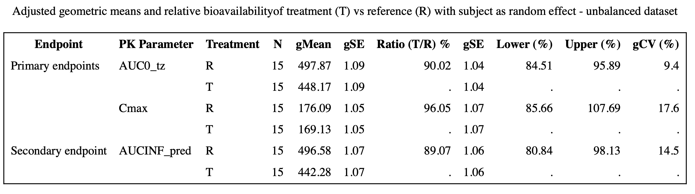
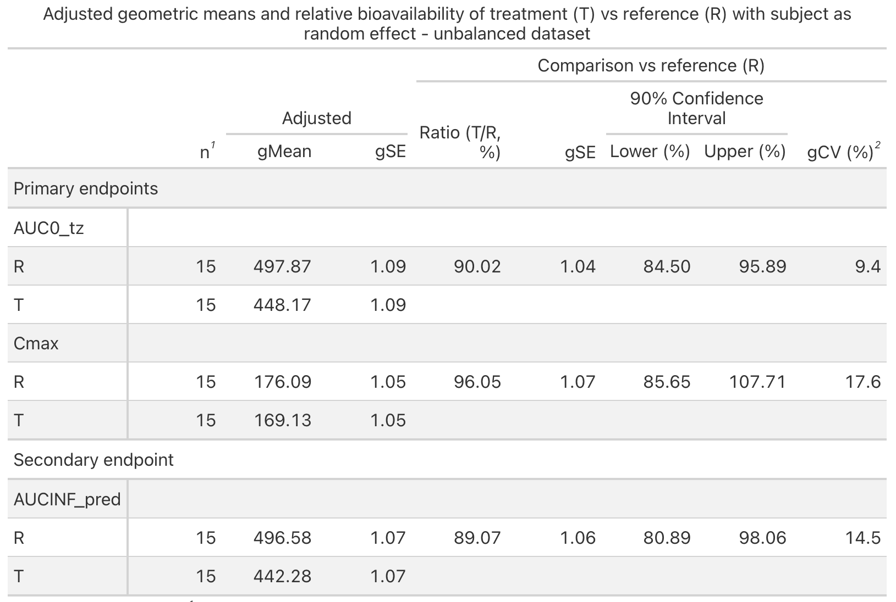
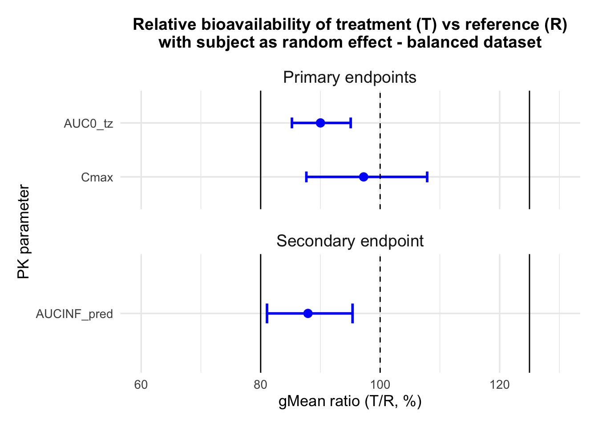
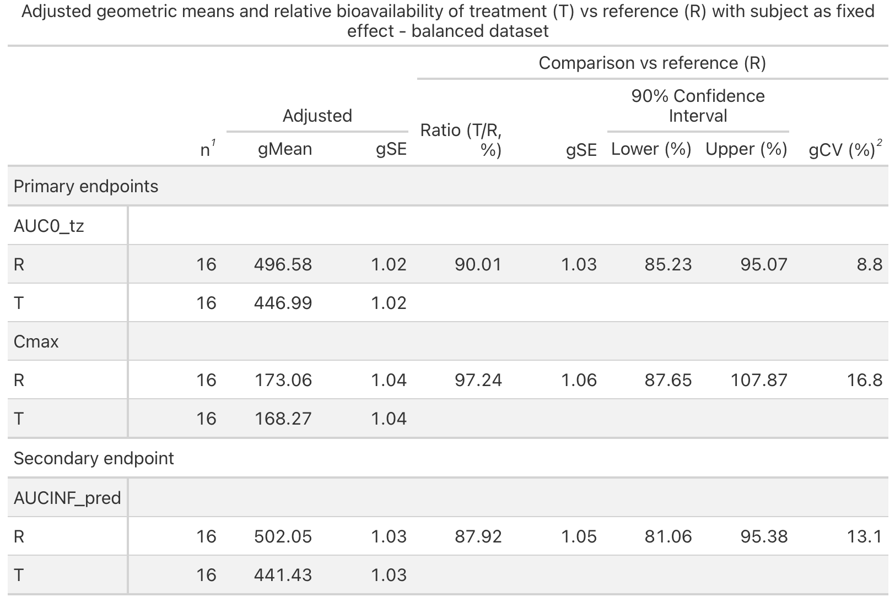
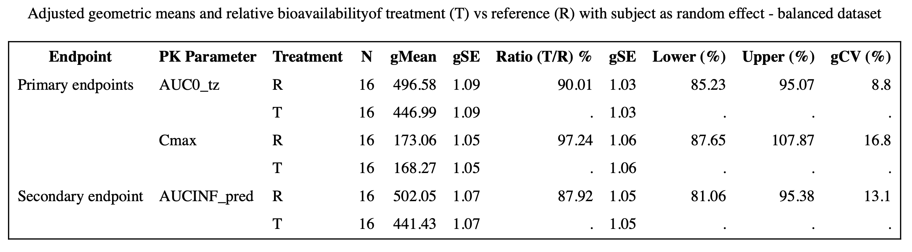
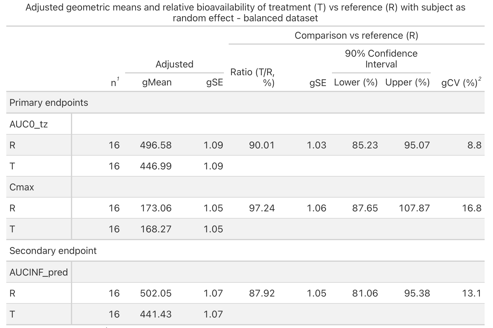
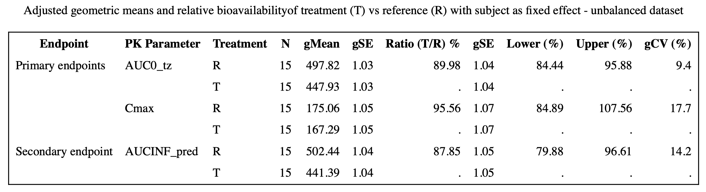
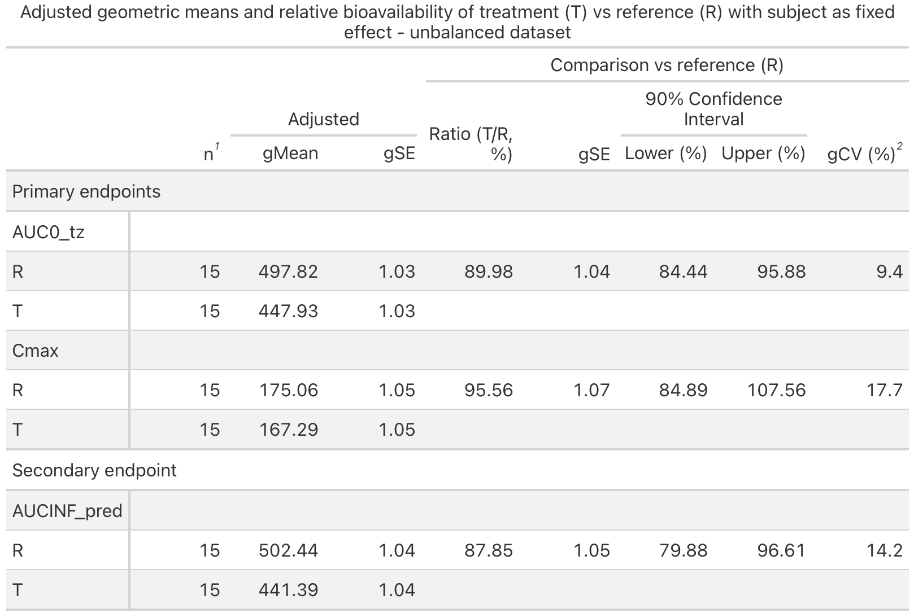

source("../../data/crossover/simulate_crossover.R")
sim <- simulate_crossover()
sim_cr <- sim$balanced
sim_cr_un <- sim$unbalancedRelative bioavailability assessment in R: a Phase 1 crossover study
1 Introduction
1.1 Motivation
Pharmaceutical companies are increasingly exploring R as an alternative to SAS for clinical trial analyses. R offers advantages such as being open source and providing modern statistical and visualization capabilities. However, before R can be considered in regulatory contexts, the reliability and reproducibility of its results must be demonstrated.
In this project, reproducibility with SAS is used as a practical benchmark for assessing reliability, since SAS remains widely accepted by regulatory authorities. The case study focuses on a 2×2 crossover design, while the accompanying repository also implements fixed-sequence and parallel-group designs. An end-to-end R workflow is presented for assessing relative bioavailability in Phase 1 clinical trials using both balanced and unbalanced simulated datasets, with direct comparison to SAS outputs where relevant.
1.2 Objectives
The objectives of this project are to:
- Demonstrate how fixed- and mixed-effects ANOVA models for relative bioavailability can be implemented in R.
- Show that R-based analyses can reproduce SAS results under standard regulatory scenarios.
- Simulate and validate datasets to support reproducible method development.
- Develop automated pipelines capable of producing regulatory-style tables and figures.
- Investigate and document the origin of any numerical discrepancies between software platforms.
2 Study design
2.1 Trial overview
The goal of a relative bioavailability study is to assess how a test product (T) performs in comparison to a reference product (R). Such studies aim to characterize differences in pharmacokinetic behavior, determine the extent and nature of these differences, and evaluate their potential impact on systemic exposure.
The main trial design considered in this project is the crossover design, in which the subjects are randomized to receive treatments in a different sequence. This design reduces inter-subject variability and allows the control of factors that may change over time.
Two other study designs are common in Phase 1 trials: the fixed-sequence design (similar to a crossover design but with all subjects receiving treatments in the same predetermined order) and the parallel-group design, in which different groups of subjects are assigned to different treatments. This case study focuses primarily on the crossover design, as it is favored in Phase 1 [1] and many of its functions generalize naturally to the other designs. To see the implementation of the other designs in R, refer to folders R/fixed_sequence and R/parallel_group in the accompanying repository.
2.2 Endpoints
To evaluate and compare bioavailability across different drug formulations, specific pharmacokinetic (PK) parameters are used. Common primary endpoints include:
\(AUC_{0\text{–}tz}\) (area under the concentration–time curve from time 0 to the last quantifiable concentration): represents total drug exposure up to the final measurable time point.
\(C_\text{max}\) (maximum observed concentration): indicates the peak plasma concentration after dosing and serves as a measure of the rate of absorption.
A commonly used secondary endpoint is \(AUC_{0\text{–}\infty}\) (area under the curve extrapolated to infinity), which extends exposure estimation beyond the last measurable concentration to approximate total systemic exposure.
2.3 Statistical framework
2.3.1 Log-transformation
The analysis of PK parameters typically relies on statistical models applied to log-transformed data.1 PK data are often right-skewed, and log-transformation improves symmetry and stabilizes variances. It also simplifies modeling by converting multiplicative relationships into additive ones.
For interpretability, results from these analyses are subsequently back-transformed to the original scale.
2.3.2 Measuring relative bioavailability
Descriptive statistics such as geometric means (gMean) and geometric standard errors (gSE) are commonly reported for each treatment. However, single-treatment summaries are often insufficient for assessing relative bioavailability.
In early-phase clinical research, the primary interest lies in relative bioavailability, which provides a descriptive comparison of pharmacokinetic profiles and focuses on estimating the difference in rate and extent of absorption between a test formulation and a reference formulation [2]. Rather than quantifying absolute exposure, the objective is to estimate the treatment contrast and its associated confidence interval (CI). No formal hypothesis testing is required, although conventional bioequivalence margins are often shown for interpretative context.2
2.3.3 Statistical modeling
This section formalizes the statistical models implemented in the R code that follows. While regulatory analyses are often conducted using software procedures rather than explicit mathematical notation, presenting the models clarifies the assumptions underlying each design and facilitates comparison with SAS implementations.
The statistical models used in this project consist of fixed-effects and mixed-effects ANOVA models applied to log-transformed pharmacokinetic responses. ANOVA models compare group means while accounting for multiple sources of variability. Fixed-effects models assume that all relevant sources of variability are represented by observed factors, whereas mixed-effects models incorporate random effects to capture unexplained variability.
In crossover designs, both modeling approaches are commonly considered. Although the model equation is the same, the key distinction lies in how subject effects are treated (either as fixed or random). Regulatory agencies recommend treating subjects as fixed effects for primary analyses and as random effects for supportive analyses [4].
The model includes:
Sequence (fixed effect): The order in which treatments are assigned.
Subject nested within sequence (either fixed or random effect): The individual subjects within each sequence group.
Each subject is uniquely assigned to one sequence and receives treatments only in that sequence’s order. From a modeling perspective, this means that subjects are considered nested within their sequence, since they cannot belong to more than one sequence.Period (fixed effect): The period at which each treatment is administered.
Treatment (fixed effect): The effect of the administered drug.
The model can be expressed as follows
\[ Y_{ijkm} = \mu + \zeta_i + s_{im} + \pi_j + \tau_k + \varepsilon_{ijkm}, \tag{1}\]
where:
- \(Y_{ijkm}\) is the log-transformed response measured on subject \(m\) in sequence \(i\), receiving treatment \(k\) in period \(j\).
- \(\mu\) is the overall mean of the log-transformed response.
- \(\zeta_i\) represents the effect of sequence \(i\) (\(i = 1, \dots, S\)).
- \(s_{im}\) is the subject effect nested within sequence (\(m = 1, 2, \dots, n_i\)).
- \(\pi_j\) denotes the period effect (\(j = 1, \dots, P\)).
- \(\tau_k\) represents the treatment effect (\(k = 1, \dots, K\)).
- \(\varepsilon_{ijkm}\) is the random error associated with subject \(m\) in sequence \(i\), receiving treatment \(k\) in period \(j\).
The subject effect is the only factor that may be modeled as either fixed or random.
Treating subject as fixed means focusing only on the specific subjects in the study, without assuming they represent a larger population. It means each subject has a specific, non-random influence on the outcome.
Treating subject as random assumes subjects are a sample from a broader population, with their contributions modeled as random deviations from the overall mean [5].
Subject as a fixed effect
The stochastic term is
\[ \varepsilon_{ijkm} \sim N(0, \sigma^2). \tag{2}\]
Here, \(\sigma^2\) captures all unexplained variability.
Subject as a random effect
The stochastic terms are
\[ s_{im} \sim N(0, \sigma_B^2) \quad \text{i.i.d.}, \qquad \varepsilon_{ijkm} \sim N(0, \sigma_W^2) \quad \text{i.i.d.}. \tag{3}\]
This formulation partitions variability into two interpretable components: between-subject (\(\sigma_B^2\)) and within-subject (\(\sigma_W^2\)):
\(\sigma_B^2\) captures variability between individuals. It reflects how different subjects are from each other in terms of their overall drug exposure, regardless of treatment.
\(\sigma_W^2\) measures variability within the same subject across different periods or treatments. It reflects how consistent a subject’s response is from one treatment to another.
3 Dataset simulation
3.1 Structure
An artificial dataset was simulated to mimic a 2×2 crossover study design commonly used in bioavailability assessments. The simulated study includes:
16 subjects randomized in a 1:1 ratio to treatment sequences (
TRandRT),Two treatments: Test (
T) and Reference (R),Three pharmacokinetic parameters:
AUC0_tz,Cmax, andAUCINF_pred.
The artificial dataset will be referred to as sim_cr throughout this case study. It includes variables for subject, sequence, period, treatment, PK parameter, as well as the PK result on both the log and original scale.
The simulation was refined to incorporate variance components, explicitly modeling both between-subject and within-subject variability. This allowed for a more realistic representation of the data structure and enabled the successful estimation of random effects in the mixed models.
For each subject, parameter values on the log scale were generated as the sum of a fixed treatment mean, a subject-level random effect (capturing between-subject variability), and a residual error term (representing within-subject variability). These values were then exponentiated to return to the original scale.3
Choice of parameters
The treatment-specific mean values and variance components used in the simulation were pre-specified to resemble plausible pharmacokinetic profiles observed in Phase 1 bioavailability studies.
Log-scale means were selected so that, after exponentiation, the resulting PK metrics would fall within realistic ranges, while maintaining moderate differences between Test and Reference products. Similarly, between-subject and within-subject variability were chosen to reflect a certain level of variation. These values were not estimated from empirical data but were fixed a priori for the purpose of creating reproducible example datasets suitable for methodological demonstration and software comparison.
Unbalanced dataset
While sim_cr represents a balanced design, with each subject contributing one observation per period, this idealized setting does not always reflect real clinical trials. In practice, subjects may discontinue participation or individual observations may be excluded due to protocol deviations or data quality issues. In such cases, subjects are typically retained in the analysis because, even with incomplete data, they still provide valuable information (particularly in Phase 1 studies, where sample sizes are often small).
As a result, datasets frequently become unbalanced, and this imbalance can affect statistical analyses. To investigate the impact of incomplete data, a second dataset, sim_cr_un, was therefore created by removing the second-period observation for subjects 5 and 6.
3.2 Reproducibility and code organization
To promote transparency and reproducibility, the simulation of the crossover datasets was implemented in a standalone R script rather than embedded directly in this report. The code chunks shown below illustrate how the simulated data were generated and loaded for analysis, while the complete simulation logic (including parameter tables, variance specifications, and randomization procedures) is contained in the dedicated file:
data/crossover/simulate_crossover.R
This modular structure ensures that the report remains readable while allowing interested readers to inspect, modify, or extend the simulation framework directly within the repository.
The code below sources the simulation function and creates both the balanced and unbalanced datasets used throughout this case study.
The simulated datasets were subsequently validated to ensure consistency with the specified design and variance structure (see Appendix A).
3.3 Exporting the datasets
The simulated datasets can optionally be saved both as RDS files (to preserve factor structure and numeric precision) and as CSV files for inspection in other software.
saveRDS(sim_cr, "data/crossover/example/sim_cr.rds")
write.csv(sim_cr, "data/crossover/example/sim_cr.csv", row.names = FALSE)
saveRDS(sim_cr_un, "data/crossover/example/sim_cr_un.rds")
write.csv(sim_cr_un, "data/crossover/example/sim_cr_un.csv", row.names = FALSE)Export chunks are not evaluated by default to avoid overwriting committed datasets.
4 R analysis pipeline
This section describes the modular R pipeline used to analyse the simulated crossover datasets.
All modelling, transformation, and reporting steps were implemented as reusable functions and organised by purpose.
The objective of this design was to mirror a production-style pharmacokinetic analysis workflow: models are fit consistently across endpoints, estimates are back-transformed and formatted for regulatory reporting, and outputs are summarised in tables and forest plots suitable for inclusion in technical reports.
Readers interested in implementation details and function-level documentation can inspect the source files referenced below.
4.1 Project structure
All analysis steps were implemented as modular functions stored in the R/ directory.
Crossover-specific modelling utilities are located in R/crossover/ and include functions for fitting fixed- and mixed-effects models, computing least-squares means, and deriving treatment contrasts.
General-purpose helpers shared across study designs (such as back-transformation to the original scale and generation of regulatory-style tables and figures) are located in R/common/.
In the case study below, these functions are sourced and applied to the simulated datasets; full implementations and inline documentation are available in the repository.
4.2 Model fitting
Model fitting is performed using a single entry-point function that splits the dataset by pharmacokinetic endpoint and applies either a fixed- or mixed-effects ANOVA model to each parameter.
For crossover designs, the models include sequence, period, and treatment effects, with subject handled either as a fixed effect or as a random effect depending on the selected formulation.
source("../../R/crossover/model_fit_cr.R")
models_fe <- run_models_cr(sim_cr, "fixed")
models_me <- run_models_cr(sim_cr, "mixed")
models_fe_un <- run_models_cr(sim_cr_un, "fixed")
models_me_un <- run_models_cr(sim_cr_un, "mixed")4.3 Back-transformation and table assembly
Model outputs are produced on the log scale. These are subsequently back-transformed to obtain geometric means, geometric standard errors, treatment ratios, confidence intervals, and intra-individual variability metrics.
Endpoint-specific results are then combined with subject counts and grouped into formatted blocks that can be assembled into a single reporting table spanning all pharmacokinetic parameters.
source("../../R/common/back_transform.R")
source("../../R/common/table_builders.R")
endpoint_map <- tibble(
Parameter = c("AUC0_tz", "Cmax", "AUCINF_pred"),
Group = c("Primary endpoints", "Primary endpoints", "Secondary endpoint")
)
final_table_fe <- build_final_table(models_fe, sim_cr, endpoint_map)
final_table_me <- build_final_table(models_me, sim_cr, endpoint_map)
final_table_fe_un <- build_final_table(models_fe_un, sim_cr_un, endpoint_map)
final_table_me_un <- build_final_table(models_me_un, sim_cr_un, endpoint_map)4.4 Reporting tables and plots
Final outputs are rendered using standardised reporting functions that produce:
publication-ready summary tables via
gt, andforest plots displaying treatment ratios and confidence intervals across endpoints.
Titles, footnotes, and annotations are automatically adapted to the study design, model formulation, and dataset structure, allowing the same reporting code to be reused across scenarios.
source("../../R/common/reporting.R")
# Formatted table
gt_table_fe <- make_gt_table(final_table_fe, "crossover", "fixed", "balanced")
gt_table_me <- make_gt_table(final_table_me, "crossover", "mixed", "balanced")
gt_table_fe_un <- make_gt_table(final_table_fe_un, "crossover", "fixed", "unbalanced")
gt_table_me_un <- make_gt_table(final_table_me_un, "crossover", "mixed", "unbalanced")
# Forest plots
forest_fe <- make_forest_plot(final_table_fe, "crossover", "fixed", "balanced")
forest_me <- make_forest_plot(final_table_me, "crossover", "mixed", "balanced")
forest_fe_un <- make_forest_plot(final_table_fe_un, "crossover", "fixed", "unbalanced")
forest_me_un <- make_forest_plot(final_table_me_un, "crossover", "mixed", "unbalanced")5 Interpretation of results
This chapter presents relative bioavailability results obtained in R for the balanced crossover dataset analysed using a fixed-effects model. They are interpreted from a regulatory perspective, with emphasis on treatment ratio estimates and their associated 90% confidence intervals.
The numerical results for the primary and secondary endpoints are summarised in Table 1:
- \(AUC_{0-tz}\): 90.01% (90% CI: 85.23% - 95.07%)
- \(C_\text{max}\): 97.24% (90% CI: 87.65% - 107.87%)
- \(AUC_{0-\infty}\): 87.92% (90% CI: 81.06% - 95.38%)
These confidence intervals were constructed using the two one-sided t-tests (TOST) procedure at a 5% significance level, corresponding to 90% confidence intervals for the test-to-reference geometric mean ratios. The conventional bioequivalence acceptance limits of 80% to 125% are displayed in Figure 1 to facilitate visual interpretation.
For all three pharmacokinetic parameters, the 90% confidence intervals lie entirely within the 80–125% reference range, supporting a conclusion of comparable systemic exposure between the two treatments. Specifically:
- For \(AUC_{0-tz}\) and \(AUC_{0-\infty}\), the confidence intervals do not include 100%, indicating slightly lower exposure for the test treatment; however, the magnitude of the difference remains within the 80–125% limits and is not considered meaningful in this exploratory context.
- For \(C_\text{max}\), the confidence interval includes 100%, indicating a close alignment between treatments with respect to peak exposure.
Overall, the results indicate no meaningful pharmacokinetic differences between the test and reference formulations and support the assessment of relative bioavailability under a fixed-effects crossover model.
Analyses of the remaining model and dataset combinations are provided in Appendix B. In the balanced dataset, fixed- and mixed-effects models produced identical estimates, as expected. In the unbalanced dataset, small numerical differences emerged between modeling approaches, including a borderline case in which the fixed-effects analysis yielded a lower confidence bound slightly below 80% for \(AUC_{0-\infty}\), while the mixed-effects model remained within the conventional bioequivalence limits. These findings highlight the sensitivity of regulatory conclusions to model choice when data are incomplete.
| Adjusted geometric means and relative bioavailability of treatment (T) vs reference (R) with subject as fixed effect - balanced dataset | ||||||||
|---|---|---|---|---|---|---|---|---|
Comparison vs reference (R)
|
||||||||
| n1 |
Adjusted
|
Ratio (T/R, %) | gSE |
90% Confidence Interval
|
gCV (%)2 | |||
| gMean | gSE | Lower (%) | Upper (%) | |||||
| Primary endpoints | ||||||||
| AUC0_tz | ||||||||
| R | 16 | 496.58 | 1.02 | 90.01 | 1.03 | 85.23 | 95.07 | 8.8 |
| T | 16 | 446.99 | 1.02 | |||||
| Cmax | ||||||||
| R | 16 | 173.06 | 1.04 | 97.24 | 1.06 | 87.65 | 107.87 | 16.8 |
| T | 16 | 168.27 | 1.04 | |||||
| Secondary endpoint | ||||||||
| AUCINF_pred | ||||||||
| R | 16 | 502.05 | 1.03 | 87.92 | 1.05 | 81.06 | 95.38 | 13.1 |
| T | 16 | 441.43 | 1.03 | |||||
| 1 n = number of observations included in the analysis of each treatment | ||||||||
| 2 intra-individual gCV | ||||||||
| February 05, 2026 | ||||||||
6 SAS analysis pipeline
To enable a direct comparison between R and SAS implementations, the crossover analysis was replicated in SAS using a modular, macro-based workflow. The structure of the SAS/ directory mirrors that of the R/ folder, with subdirectories corresponding to each study design (crossover/, fixed_sequence/, and parallel_group/) and a common/ directory containing shared utilities for table assembly and reporting.
While functions are provided for all three designs, a complete end-to-end pipeline is implemented for the crossover case study. This pipeline is orchestrated by the script:
SAS/crossover/example/run_crossover.sas
which reproduces the full analysis performed in R, including model fitting, extraction of treatment contrasts, back-transformation to the original scale, and construction of regulatory-style tables.
The SAS workflow proceeds through the following pipeline.
1. Data import
Balanced and unbalanced crossover datasets generated in R are imported from CSV files into SAS libraries using PROC IMPORT.
2. Model fitting
Relative bioavailability models are fitted using PROC MIXED through a parameterized macro [6]. Both fixed-effects and mixed-effects formulations are supported, differing only in whether subject-within-sequence is included as a fixed effect or as a random effect. Least-squares means and treatment contrasts are obtained with 90% confidence intervals using Kenward–Roger degrees of freedom [7].
3. Batch execution
A wrapper macro runs all four combinations of interest:
- balanced / fixed-effects
- balanced / mixed-effects
- unbalanced / fixed-effects
- unbalanced / mixed-effects
and stores the intermediate results in standardized output tables.
4. Post-processing and back-transformation
Additional macros compute sample sizes per treatment group, merge model outputs, and perform all back-transformations from the log scale to the original scale, including geometric means, ratios, confidence limits, and geometric coefficients of variation.
5. Reporting
Finally, formatted regulatory-style tables are produced using PROC REPORT, with titles and column labels automatically adapted to the model formulation and dataset structure. Temporary intermediate datasets are removed at the end of the pipeline to maintain a clean working environment.
All macros used in this workflow are documented in the headers of the corresponding SAS scripts within the repository, and are organized in the SAS/common/ and SAS/crossover/ directories for transparency and reuse.
7 Comparison with SAS outputs
Results for balanced designs and for fixed-effects models applied to the unbalanced dataset were numerically identical between R and SAS and are provided in Appendix B.
The only discrepancies observed across platforms occurred for the mixed-effects model fitted to the unbalanced dataset, where small differences in the Kenward–Roger (KR) degrees of freedom led to slightly different confidence intervals for the treatment comparisons. Estimated geometric means and T/R ratios were identical, but the lower and upper confidence limits differed at the fourth decimal place (or second decimal place, if percentages are considered).
A side-by-side comparison of the final regulatory-style tables produced by SAS and R is shown in Figure 2 and the only differences are in the confidence intervals of the geometric mean ratios:
- \(AUC_{0-tz}\): 84.51% - 95.89% in SAS and 84.50% - 95.89% in R
- \(C_\text{max}\): 85.66% - 107.69% in SAS and 85.65% - 107.71% in R
- \(AUC_{0-\infty}\): 80.84% - 98.13% in SAS and 80.89% - 98.06% in R
These differences are attributable to platform-specific implementations of the Kenward–Roger approximation for degrees of freedom. In additional investigations (not shown), analyses performed using the Satterthwaite method produced complete agreement between R and SAS, supporting the conclusion that the discrepancy arises from the KR algorithm rather than from back-transformation procedures or data handling.
The effect was only observed in the presence of incomplete data, where some subjects contributed observations from a single period. When the same models were fitted to fully balanced datasets, or when such subjects were excluded, R and SAS yielded identical results for both fixed- and mixed-effects models.
From a regulatory perspective, the magnitude of these differences is negligible and usually does not alter bioavailability conclusions. Nonetheless, the findings highlight that minor numerical discrepancies may occur across software platforms when applying Kenward–Roger adjustments in mixed-effects models with unbalanced data, and such behavior should be acknowledged when comparing R-based pipelines against SAS workflows.


8 Discussion and conclusions
8.1 Summary of objectives
The primary objective of this project was to evaluate whether analyses of relative bioavailability performed in R can reproduce the SAS outputs typically used for regulatory submissions.
To this end, the project aimed to:
- Demonstrate how fixed- and mixed-effects ANOVA models for relative bioavailability can be implemented in R.
- Show that R-based analyses can reproduce SAS results under standard regulatory scenarios.
- Simulate and validate datasets to support reproducible method development.
- Develop automated pipelines capable of producing regulatory-style tables and figures.
- Investigate and document the origin of any numerical discrepancies between software platforms.
Together, these objectives were intended both to provide a rigorous technical comparison and to deliver a practical, reproducible framework for conducting regulatory-grade analyses in R.
8.2 Key findings
Across crossover designs with balanced data, R reproduced SAS results exactly in terms of parameter estimates, confidence intervals, and regulatory conclusions.
Custom R functions developed in this repository can be applied to each study design just by changing the parameters.
Simulation of a 2×2 crossover dataset provided a controlled setting for method development and software comparison, ensuring that any observed discrepancies could be attributed to software implementation rather than data artifacts.
8.3 Limitations and observed discrepancies
While controlled examples showed perfect agreement, small but systematic differences emerged in mixed-effects models applied to unbalanced datasets.
These discrepancies were driven solely by differences in Kenward–Roger degrees of freedom, leading to confidence limits that differed in the fourth decimal place. Parameter estimates and treatment ratios remained identical.
R’s open-source implementation makes the relevant numerical procedures transparent [8], whereas SAS provides only high-level documentation of its KR algorithm [9]. Consequently, perfect numerical alignment cannot always be guaranteed when unbalanced data are present.
8.4 Conclusions and outlook
This work demonstrates that R can reliably reproduce SAS results for relative bioavailability analyses in phase 1 settings. Fixed-effects models are numerically identical across platforms, and mixed-effects models agree fully for balanced datasets. Minor discrepancies may arise for unbalanced data, but these are negligible from a regulatory perspective and do not undermine the validity of R-based analyses.
Beyond relative bioavailability, extending these comparisons to additional pharmacokinetic endpoints and trial designs would further strengthen confidence in R for regulatory use.
From a practical standpoint, the R functions developed here could be consolidated into standardized pipelines or internal packages, facilitating wider adoption in pharmaceutical environments.
Continued investigation of unbalanced datasets remains warranted, as these are the scenarios most likely to expose implementation differences in Kenward–Roger adjustments. Clear documentation of such effects is essential when validating R workflows against established SAS pipelines.
Overall, this project provides a reproducible foundation for evaluating and deploying R-based pharmacokinetic analyses alongside traditional SAS workflows.
9 Reproducibility
This repository is designed to provide a fully reproducible workflow for comparing R- and SAS-based analyses of relative bioavailability in Phase 1 clinical trials. All figures, tables, and results reported in this document were generated programmatically using R and Quarto, with SAS outputs produced independently for benchmarking purposes.
9.1 Software environment
The analyses were conducted using the following software versions:
- R version 4.5.2
- Quarto version 1.7.33
- SAS version 9.4 (TS1M7)[10]
Key R packages include [11–18]:
dplyr(v1.1.4)emmeans(v1.9.0)ggplot2(v3.5.2)gt(v0.10.0)lme4(v1.1-35.1)pbkrtest(v0.5.4)purrr(v1.0.2)tidyr(v1.3.0)
Package versions are controlled using the renv framework. The file renv.lock records the exact R package versions used to generate the results. Users can recreate the environment by running renv::restore() after cloning the repository.
SAS programs were executed independently in a local SAS environment and are provided in the repository for transparency and comparison.
9.2 Repository structure
The main directories of the project are:
data/: simulated datasets and functions used to generate them across designs.R/: model-fitting functions and analysis pipelines.output/: files for the crossover report and images used to render it.SAS/: SAS macros and scripts used to run the comparison analyses.
9.3 Reproducing the R analyses
To reproduce the full analysis:
- Clone the project repository.
- Open the project in RStudio by double-clicking the
.Rprojfile. - Install the required R packages. If using
renv, restore the environment with:
renv::restore()- Render the Quarto document from the project root:
quarto render output/crossover/crossover_case_study.qmdThe rendered HTML report will be in the same folder. Outputs from R are stored under output/crossover/images/R/.
Model-fitting functions are sourced automatically from the R/ directory during rendering.
9.4 Reproducing the SAS analyses
SAS programs used for the comparison analyses are located in the SAS/ directory and were executed using SAS version 9.4 (TS1M7) on a local installation. The primary script for reproducing the crossover analyses is SAS/crossover/example/run_crossover.sas.
Outputs from SAS are stored under output/crossover/images/SAS/.
9.5 Notes on platform differences
Minor numerical discrepancies between R and SAS may arise in mixed-effects models applied to unbalanced datasets due to differences in the implementation of the Kenward–Roger degrees-of-freedom approximation. These are documented in the Section 7 and Section 8 chapters and should be considered when comparing R-based pipelines against SAS workflows.
10 References
1.
Agency EM. Guideline on the investigation of bioequivalence [Internet]. London, UK: European Medicines Agency; 2010. Available from: https://www.ema.europa.eu/en/documents/scientific-guideline/guideline-investigation-bioequivalence-rev1_en.pdf
2.
Food US, Administration D. Guidance for industry: Bioavailability and bioequivalence studies for orally administered drug products — general considerations [Internet]. 2002. Available from: https://www.fda.gov/media/70858/download
3.
Food US, Administration D. Guidance for industry: Statistical approaches to establishing bioequivalence [Internet]. U.S. Food; Drug Administration; 2001. Available from: https://www.fda.gov/media/70958/download
4.
Agency EM. ICH M13A guideline on bioequivalence for immediate-release solid oral dosage forms [Internet]. European Medicines Agency; 2024. Available from: https://www.ema.europa.eu/en/documents/scientific-guideline/ich-m13a-guideline-bioequivalence-immediaterelease-solid-oral-dosage-forms-step-5_en.pdf
5.
Inc. SI. SAS/STAT® 14.3 user’s guide: The VARCOMP procedure [Internet]. Cary, NC: SAS Institute Inc.; 2017. Available from: https://documentation.sas.com/doc/en/statug/14.3/statug_varcomp_overview.htm
6.
Inc. SI. SAS/STAT 13.1 user’s guide: The MIXED procedure. Cary, NC: SAS Institute Inc.; 2013.
7.
Kenward MG, Roger JH. Small sample inference for fixed effects from restricted maximum likelihood. Biometrics. 1997;53[3]:983–97.
8.
Team RC, authors {mmrm}. Kenward-roger degrees of freedom in {mmrm} [Internet]. 2023. Available from: https://cran.r-project.org/web/packages/mmrm/vignettes/kenward.html
9.
Inc. SI. Kenward-roger degrees of freedom approximation [Internet]. 2020. Available from: https://documentation.sas.com/doc/en/statug/15.3/statug_glimmix_details40.htm
10.
Inc. SI. SAS/STAT 13.1 user’s guide. Cary, NC: SAS Institute Inc.; 2013.
11.
Wickham H, François R, Henry L, Müller K, Vaughan D. Dplyr: A grammar of data manipulation [Internet]. 2023. Available from: https://dplyr.tidyverse.org
12.
Lenth RV. Emmeans: Estimated marginal means, aka least-squares means [Internet]. 2023. Available from: https://github.com/rvlenth/emmeans
13.
Wickham H. ggplot2: Create elegant data visualisations using the grammar of graphics [Internet]. 2023. Available from: https://ggplot2.tidyverse.org
14.
Iannone R, Cheng J, Schloerke B, Hughes E, Lauer A, Seo J. Gt: Easily create presentation-ready display tables [Internet]. 2023. Available from: https://gt.rstudio.com
15.
Bates D, Mächler M, Bolker B, Walker S. Fitting linear mixed-effects models using lme4. Journal of Statistical Software. 2015;67[1]:1–48.
16.
Christensen RHB. Pbkrtest: Parametric bootstrap and kenward-roger based methods for mixed model comparison [Internet]. 2022. Available from: https://cran.r-project.org/package=pbkrtest
17.
Wickham H, Henry L. Purrr: Functional programming tools [Internet]. 2023. Available from: https://purrr.tidyverse.org/
18.
Wickham H, Vaughan D, Girlich M. Tidyr: Tidy messy data [Internet]. 2023. Available from: https://tidyr.tidyverse.org
Appendix A - Model validation
To ensure that the simulated crossover datasets were suitable for both fixed-effects and mixed-effects analyses, standard model diagnostics were performed on each pharmacokinetic parameter. For crossover designs, model validation focused on two key assumptions:
Normality of residuals, assessed using Q–Q plots.
Homoscedasticity, assessed by plotting residuals versus fitted values.
These checks were conducted separately for:
balanced and unbalanced datasets, and
fixed-effects and mixed-effects model specifications.
All validation routines were implemented in a dedicated script within the repository:
data/crossover/validate_crossover.R
This script contains reusable functions that automate model fitting and residual diagnostics for each PK parameter.
The code below illustrates how validation was performed for all combinations of dataset type and model specification. Because these commands generate a large number of diagnostic plots, they are shown here for reproducibility but were not executed during document rendering.
source("../../data/crossover/validate_crossover.R")
validate_all_cr(res, dataset = "balanced", model_type = "fixed")
validate_all_cr(res, dataset = "balanced", model_type = "mixed")
validate_all_cr(res, dataset = "unbalanced", model_type = "fixed")
validate_all_cr(res, dataset = "unbalanced", model_type = "mixed")Appendix B - Interpretation of other results
Balanced dataset
As shown in Table 2 and Figure 3, the relative bioavailability results obtained using a mixed-effects model for the balanced dataset are identical to those derived under the fixed-effects model; consequently, the regulatory interpretation is unchanged. Detailed discussion is therefore not repeated here, and readers are referred to Section 5.
The agreement between the fixed- and mixed-effects models is expected. In balanced crossover designs, modeling subject as a fixed or random effect typically yields the same treatment effect estimates. The key distinction lies in how subject-level variability is treated: as a fixed factor in the fixed-effects model, and as a random component in the mixed-effects model. Despite these structural differences, the resulting geometric means, ratios, and confidence intervals remain consistent [3].
Mixed-effects model
| Adjusted geometric means and relative bioavailability of treatment (T) vs reference (R) with subject as random effect - balanced dataset | ||||||||
|---|---|---|---|---|---|---|---|---|
Comparison vs reference (R)
|
||||||||
| n1 |
Adjusted
|
Ratio (T/R, %) | gSE |
90% Confidence Interval
|
gCV (%)2 | |||
| gMean | gSE | Lower (%) | Upper (%) | |||||
| Primary endpoints | ||||||||
| AUC0_tz | ||||||||
| R | 16 | 496.58 | 1.09 | 90.01 | 1.03 | 85.23 | 95.07 | 8.8 |
| T | 16 | 446.99 | 1.09 | |||||
| Cmax | ||||||||
| R | 16 | 173.06 | 1.05 | 97.24 | 1.06 | 87.65 | 107.87 | 16.8 |
| T | 16 | 168.27 | 1.05 | |||||
| Secondary endpoint | ||||||||
| AUCINF_pred | ||||||||
| R | 16 | 502.05 | 1.07 | 87.92 | 1.05 | 81.06 | 95.38 | 13.1 |
| T | 16 | 441.43 | 1.07 | |||||
| 1 n = number of observations included in the analysis of each treatment | ||||||||
| 2 intra-individual gCV | ||||||||
| February 05, 2026 | ||||||||

Unbalanced dataset
In contrast to the balanced scenario, the unbalanced dataset leads to small but noticeable differences between the fixed- and mixed-effects model results (Table 3, Table 4; Figure 4, Figure 5). These differences arise because, when data are incomplete, the two modeling approaches no longer yield identical estimates.
Under the fixed-effects analysis, the lower bound of the 90% confidence interval for \(AUC_{0-\infty}\) is slightly below the conventional 80% bioequivalence limit (79.88%), whereas the mixed-effects model yields a corresponding lower bound above 80% (80.89%). Although the numerical difference is small, it illustrates how model choice in the presence of missing observations can influence regulatory-relevant conclusions when estimates lie near decision boundaries.
Fixed-effects model
| Adjusted geometric means and relative bioavailability of treatment (T) vs reference (R) with subject as fixed effect - unbalanced dataset | ||||||||
|---|---|---|---|---|---|---|---|---|
Comparison vs reference (R)
|
||||||||
| n1 |
Adjusted
|
Ratio (T/R, %) | gSE |
90% Confidence Interval
|
gCV (%)2 | |||
| gMean | gSE | Lower (%) | Upper (%) | |||||
| Primary endpoints | ||||||||
| AUC0_tz | ||||||||
| R | 15 | 497.82 | 1.03 | 89.98 | 1.04 | 84.44 | 95.88 | 9.4 |
| T | 15 | 447.93 | 1.03 | |||||
| Cmax | ||||||||
| R | 15 | 175.06 | 1.05 | 95.56 | 1.07 | 84.89 | 107.56 | 17.7 |
| T | 15 | 167.29 | 1.05 | |||||
| Secondary endpoint | ||||||||
| AUCINF_pred | ||||||||
| R | 15 | 502.44 | 1.04 | 87.85 | 1.05 | 79.88 | 96.61 | 14.2 |
| T | 15 | 441.39 | 1.04 | |||||
| 1 n = number of observations included in the analysis of each treatment | ||||||||
| 2 intra-individual gCV | ||||||||
| February 05, 2026 | ||||||||
Mixed-effects model
| Adjusted geometric means and relative bioavailability of treatment (T) vs reference (R) with subject as random effect - unbalanced dataset | ||||||||
|---|---|---|---|---|---|---|---|---|
Comparison vs reference (R)
|
||||||||
| n1 |
Adjusted
|
Ratio (T/R, %) | gSE |
90% Confidence Interval
|
gCV (%)2 | |||
| gMean | gSE | Lower (%) | Upper (%) | |||||
| Primary endpoints | ||||||||
| AUC0_tz | ||||||||
| R | 15 | 497.87 | 1.09 | 90.02 | 1.04 | 84.50 | 95.89 | 9.4 |
| T | 15 | 448.17 | 1.09 | |||||
| Cmax | ||||||||
| R | 15 | 176.09 | 1.05 | 96.05 | 1.07 | 85.65 | 107.71 | 17.6 |
| T | 15 | 169.13 | 1.05 | |||||
| Secondary endpoint | ||||||||
| AUCINF_pred | ||||||||
| R | 15 | 496.58 | 1.07 | 89.07 | 1.06 | 80.89 | 98.06 | 14.5 |
| T | 15 | 442.28 | 1.07 | |||||
| 1 n = number of observations included in the analysis of each treatment | ||||||||
| 2 intra-individual gCV | ||||||||
| February 05, 2026 | ||||||||

Appendix C - Comparison with other SAS outputs
Balanced dataset
For both fixed- and mixed-effects models applied to the balanced dataset (Figure 6 and Figure 7), results from R and SAS are numerically identical. Geometric means, treatment ratios, confidence intervals, and coefficient of variation coincide exactly across platforms.
These results confirm that the R implementation reproduces SAS outputs under ideal balanced conditions.
Fixed-effects model

Mixed-effects model


Unbalanced dataset
As shown in Figure 8, fixed-effects analyses of the unbalanced dataset produced identical results in R and SAS. Despite the presence of missing second-period observations for two subjects, treatment estimates and confidence intervals remain fully aligned across software platforms when subjects are modeled as fixed effects.
This further supports that discrepancies across platforms arise specifically from the combination of mixed-effects modeling, unbalanced data, and Kenward–Roger degree-of-freedom adjustments, rather than from data handling or back-transformation procedures.
Fixed-effects model


Footnotes
Throughout this report, “log-transformation” refers to the natural logarithm.↩︎
While both relative bioavailability and bioequivalence compare two formulations, the latter is a regulatory concept requiring formal hypothesis testing to demonstrate therapeutic equivalence using predefined margins (typically 80–125%) and procedures such as the two one-sided tests (TOST) [3].↩︎
It was important to ensure that the simulated dataset would support both fixed-effects and mixed-effects modeling approaches. Since mixed-effects models require subject-level variability to estimate random effects reliably, the dataset was explicitly constructed to include this structure.
Although this may not reflect ideal conditions for fixed effects modeling, using the same dataset for both models mirrors standard practice in real-world analyses. And since the emphasis of this work is to compare the implementation of statistical models in SAS and R (rather than to evaluate model performance or inferential accuracy), using a single dataset across both approaches ensures a fair and controlled comparison.↩︎